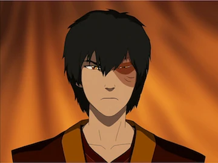

Zuko's Character Development

I recently rewatched Avatar: The Last Airbender and I think Zuko has one of the best character arcs I have seen in any show. When he first shows up he only cares about capturing the Avatar so his father will accept him again. He is angry all the time and he takes it out on everybody around him, even his uncle, who is the only person actually on his side. Watching it again as an adult I picked up on a lot more of why he acts like that.
What I like most is that his change does not happen all at once. He makes progress, then he goes backwards, then he has to try again. In Season 2 it looks like he is finally doing better, and then he betrays Iroh at the end of the season. It is frustrating to watch, but I think that is why it feels real. Most people do not change in one moment. It takes time and a lot of mistakes, and that is pretty much what the Iroh quote at the top of my blog is about.